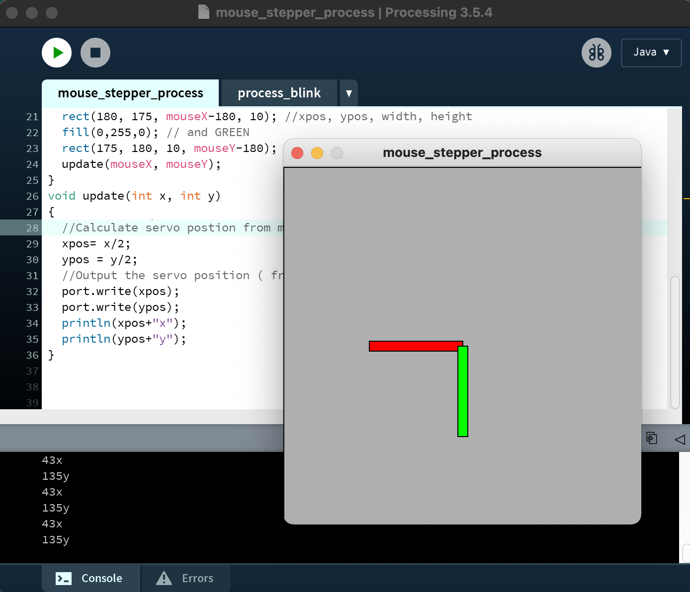

This week, we worked on creating networked machines and using stepper motors.
To start, we created a simple conveyor belt carriage that translated the stepper motor's angular motion into
linear motion. Following the PS70 tutorial and assembling the laser cut wood pieces, I now had a base on which to build
more complex machines.
My intial idea from looking at this construction was that it would translate well into a face-tracking camera, something
that I discovered was usually built with servos. Adding in the stepper-powered carriage, I could enable even more degrees of
freedom in the face tracking. However, due to driver issues with the ESP32-CAM, mostly surrounding the COM ports not showing up,
I switched to an alternate idea of controlling the position and orientation of the arm system.
I found that a tool called
Proccessing
would enable the GUI that I wanted. I hoped to translate both the mouse's XY position and button clicks into arm movement.
Processing makes this easier than trying to input directions via Arduino's serial monitor, which requires you to hit enter to send commands
and also doesn't come with the GUI.
After attempting to follow this
tutorial
I found my port issues were persisting, and I was not able to properly transmit over my Serial ports
using Processing.
Here is a draft of the Java code, which given proper Serial connection, should be sending XY data over the port.
Here is a demo of the interface, where you can see the data it's meant to be sending, but is not due to
issues hooking up the port in intialization steps.

Therefore, since I still hadn't played around too much with the stepper yet, I came up with the alternate idea of programming the carriage to
simply take in sensory input and produce a consistent motion response. Inspired by a lot of the animal/pet feeding ideas that sprang from this week,
I decided to build a "pecking chicken", which, when food (weight) was placed on its mat (capacitive tx-rx sensor), would move over to the food location and
begin pecking. Otherwise, it would return to the "home" position. I tried using the Piezo, but eventually decided on a capacitive sensor since I got more consistent values with continuous pressing.
Here is my final wiring setup:
I did decide to attach two servos to give me a shot at constructing the full arm I had originally planned on making. I also found that, code-wise,
moving the stepper between two positions could be most simply achieved by running "stepper.runToNewPosition(1000);", which requires no delays, loops, or halting motion.
Here is my final code:
#include
#include
const int stepPin = 13; // blue
const int dirPin = 12; // orange
AccelStepper stepper(1, stepPin, dirPin); // initialise accelstepper for a two wire board
Servo myservo; // create servo object to control a servo
Servo myservo2;
int analogPin = 0;
int pos = 0; // home position
int read_high;
int read_low;
int reading = 0;
void setup()
{
pinMode(4,OUTPUT); //Pin 4 provides the voltage step
myservo.attach(9);
myservo2.attach(10);
stepper.setMaxSpeed(1100);
stepper.setAcceleration(1000);
}
void loop()
{
getCapReading();
Serial.print("Analog reading = ");
Serial.println(reading);
if (reading > 500){
// Serial.println("peck now!");
if (pos == 1){
peck();
}
else{
myservo2.write(0);
delay(400);
stepper.runToNewPosition(1000);
pos = 1;
}
}
else{
// Serial.println("go home!");
if (pos == 1){
myservo2.write(80);
delay(400);
stepper.runToNewPosition(0);
pos = 0;
}
}
delay(100);
}
void peck(){
myservo.write(30);
delay(400);
myservo.write(140);
delay(400);
myservo.write(30);
}
void getCapReading(){
digitalWrite(4,HIGH); //Step the voltage high on conductor 1.
read_high = analogRead(A0); //Measure response of conductor 2.
delayMicroseconds(100); //Delay to reach steady state.
digitalWrite(4,LOW); //Step the voltage to zero on conductor 1.
read_low = analogRead(A0); //Measure response of conductor 2.
reading = read_high - read_low; //desired answer is the difference between high and low.
}
And here is my demo video: